幂函数
幂函数
牛顿迭代
三角函数
指数函数
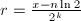满足,则,其中一般取.
,,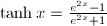,.
余弦函数
根据三角函数的周期性,我们只用考虑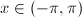的情形.令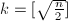,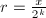,计算再由就可以求出. 像这样的级数可以按下面的步骤计算.
 ,.
,. 达到指定精度,返回
达到指定精度,返回 ;否则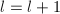,转2.
;否则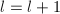,转2.还有一种渐进更快的算法,对于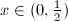,设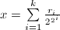,.令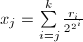,则,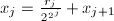,再令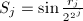,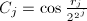,我们有  和
和 可以用上面计算的方法来计算,这样就可以递推地求出.
可以用上面计算的方法来计算,这样就可以递推地求出.
可以简单的用来计算.
反正切函数
根据和,可以只考虑的情形.
设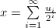,其中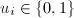.设, ,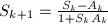,其中是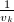的整倍数并且满足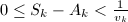,注意到我们有
,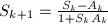,其中是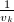的整倍数并且满足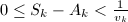,注意到我们有
.
正交多项式
正交多项式是函数逼近的重要工具,在数值积分中也有重要应用.
- 若,为
![$[a,b]$](latex/latex2png-Function_35152_-5.gif) 上的权函数且满足则称
上的权函数且满足则称 与
与 在上带权正交.
在上带权正交. - 若函数族
 满足关系
满足关系 则称是上带权的正交函数族;若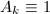,则称之为标准正交函数族.
则称是上带权的正交函数族;若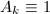,则称之为标准正交函数族. - 设是上首项系数的
 次多项式,为上权函数,如果多项式序列是正交函数族,则称多项式序列为在上带权正交,称为上带权的次正交多项式.
次多项式,为上权函数,如果多项式序列是正交函数族,则称多项式序列为在上带权正交,称为上带权的次正交多项式.
只要给定区间及权函数,均可由一族线性无关的幂函数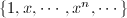利用逐个正交化手续构造出正交多项式序列:
这样得到的正交多项式序列有如下性质:
- 是具有最高次项系数为一的次多项式
- 任何次多项式均可表示为的线性组合.
- 当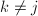时,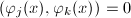,且与任一次数小于
 的多项式正交.
的多项式正交. - 成立递推关系其中 这里.
- 设是在上带权的正交多项式序列,则的个根都是在区间
 内的单重实根.
内的单重实根.
Legendre多项式
当区间为,权函数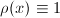时,由正交化得到的多项式就称为勒让德多项式,并用表示.勒让德多项式对应的含参数二阶常微分方程为这个方程也可以化为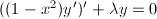,它对应的通解Legendre多项式满足递推公式和混合递推公式罗德里克(Rodrigul)后来给出了一个简洁的通项公式
Chebyshev多项式
当权函数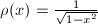,区间为时,由序列正交化得到的正交多项式就是切比雪夫多项式,它可表示为若令,则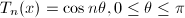.切比雪夫多项式对应的含参数二阶常微分方程为它对应的通解满足递推公式
第二类Chebyshev多项式
在区间上带权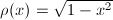的正交多项式称为第二类切比雪夫多项式,其表达式为令,可得
即是上带权 的正交多项式族.还可得到递推关系式
第二类切比雪夫多项式对应的含参数二阶常微分方程为
的正交多项式族.还可得到递推关系式
第二类切比雪夫多项式对应的含参数二阶常微分方程为
Laguerre多项式
在区间上带权的正交多项式称为拉盖尔多项式,其表达式为它也具有正交性质和递推关系 拉盖尔多项式对应的含参数二阶常微分方程为这个方程也可以化为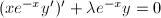.
Hermite多项式
在区间上带权 的正交多项式称为埃尔米特多项式,其表达式为它满足正交关系和递推关系
埃尔米特多项式对应的含参数二阶常微分方程为
的正交多项式称为埃尔米特多项式,其表达式为它满足正交关系和递推关系
埃尔米特多项式对应的含参数二阶常微分方程为
矩构造
除上面提到的这些多项式之外,还有一些正交多项式也是经常用到的.
令是测度 的矩,定义多项式序列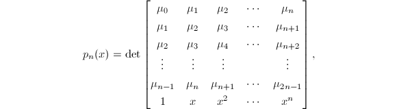则它是测度下的一个正交多项式序列.为了证明这一点,我们考虑
的矩,定义多项式序列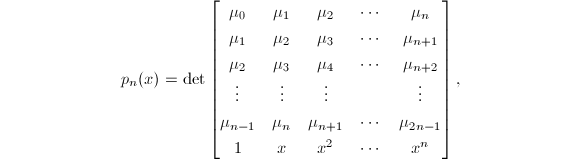则它是测度下的一个正交多项式序列.为了证明这一点,我们考虑 和
和 的内积,
的内积,
![\begin{align*}
\int_\mathbb{R} x^k p_n(x)\,d\mu
&= \int_\mathbb{R} x^k \det
\begin{bmatrix}
\mu_0 & \mu_1 & \mu_2 & \cdots & \mu_n \\
\mu_1 & \mu_2 & \mu_3 & \cdots & \mu_{n+1} \\
\mu_2 & \mu_3 & \mu_4 & \cdots & \mu_{n+2} \\
\vdots & \vdots & \vdots & & \vdots \\
\mu_{n-1} & \mu_n & \mu_{n+1} & \cdots & \mu_{2n-1} \\
1 & x & x^2 & \cdots & x^n
\end{bmatrix}\,d\mu \\
&= \int_\mathbb{R} \det
\begin{bmatrix}
\mu_0 & \mu_1 & \mu_2 & \cdots & \mu_n \\
\mu_1 & \mu_2 & \mu_3 & \cdots & \mu_{n+1} \\
\mu_2 & \mu_3 & \mu_4 & \cdots & \mu_{n+2} \\
\vdots & \vdots & \vdots & & \vdots \\
\mu_{n-1} & \mu_n & \mu_{n+1} & \cdots & \mu_{2n-1} \\
x^k & x^{k+1} & x^{k+2} & \cdots & x^{k+n}
\end{bmatrix}
\,d\mu \\
&= \det
\begin{bmatrix}
\mu_0 & \mu_1 & \mu_2 & \cdots & \mu_n \\
\mu_1 & \mu_2 & \mu_3 & \cdots & \mu_{n+1} \\
\mu_2 & \mu_3 & \mu_4 & \cdots & \mu_{n+2} \\
\vdots & \vdots & \vdots & & \vdots \\
\mu_{n-1} & \mu_n & \mu_{n+1} & \cdots & \mu_{2n-1} \\
\int_\mathbb{R} x^k \, d\mu & \int_\mathbb{R} x^{k+1} \, d\mu & \int_\mathbb{R} x^{k+2} \, d\mu & \cdots & \int_\mathbb{R} x^{k+n} \, d\mu
\end{bmatrix}\\
&= \det
\begin{bmatrix}
\mu_0 & \mu_1 & \mu_2 & \cdots & \mu_n \\
\mu_1 & \mu_2 & \mu_3 & \cdots & \mu_{n+1} \\
\mu_2 & \mu_3 & \mu_4 & \cdots & \mu_{n+2} \\
\vdots & \vdots & \vdots & & \vdots \\
\mu_{n-1} & \mu_n & \mu_{n+1} & \cdots & \mu_{2n-1} \\
\mu_k & \mu_{k+1} & \mu_{k+2} & \cdots & \mu_{k+n}
\end{bmatrix}\\
&= 0
\end{align*},](latex/latex2png-Function_173032784_.gif) 因此我们可以通过选取不同的测度构造出不同的正交多项式.
因此我们可以通过选取不同的测度构造出不同的正交多项式.
特殊函数
特殊函数理论处理一些类似三角函数,,Zeta函数和Bessel函数的超几何级数函数,而这些理论的研究并不在一般数学分析或实分析范畴之内,传统上对特殊函数的分析主要基于对其的数值展开基础上,近年来李群理论提供了对这个问题的新视角.
阶乘函数
阶乘可以用折半求和来计算,,取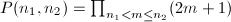即可.
伽马函数
是阶乘函数在实数和复数域上的推广.
可以延拓到整个复平面上,利用分部积分,我们有 是一致的,
是一致的,
欧拉反射公式对于的计算很有用.
可能会很大,因此常常先计算 ,
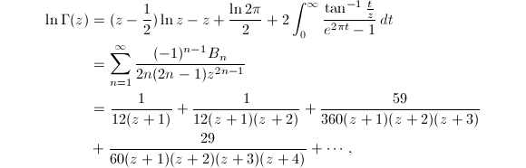
其中为伯努利数,即伯努利多项式在
,
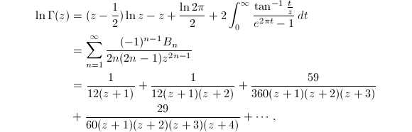
其中为伯努利数,即伯努利多项式在 处的值,
处的值,
- 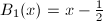
- 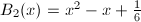
- 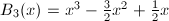
当 为有理数时,其中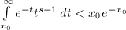.
为有理数时,其中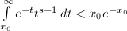.
的对数微分称为PolyGamma函数.
它有如下性质. 其中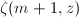为Zeta函数, 用解析数论的知识还可以证明 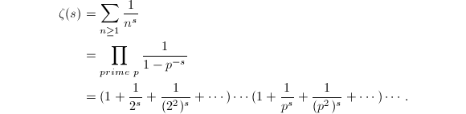 .
.
的积分区间可以拆为和 ,这样将得到不完全伽马函数.
,这样将得到不完全伽马函数.
Bessel函数
Bessel函数一般定义为微分方程的解,它的显式表达式为
当 为正整数时,另一个等价的定义是
为正整数时,另一个等价的定义是
误差函数
这里的误差函数是指满足高斯分布的误差函数.
一般采用级数展开式 来计算.